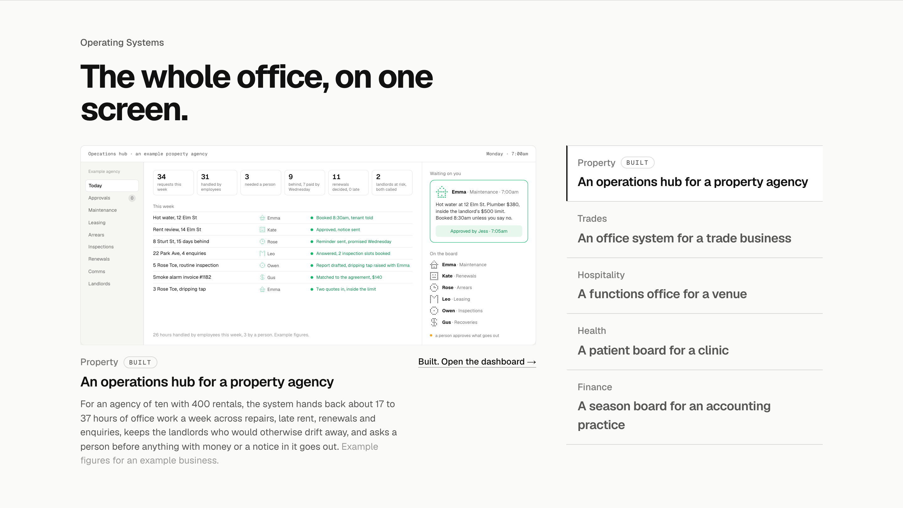
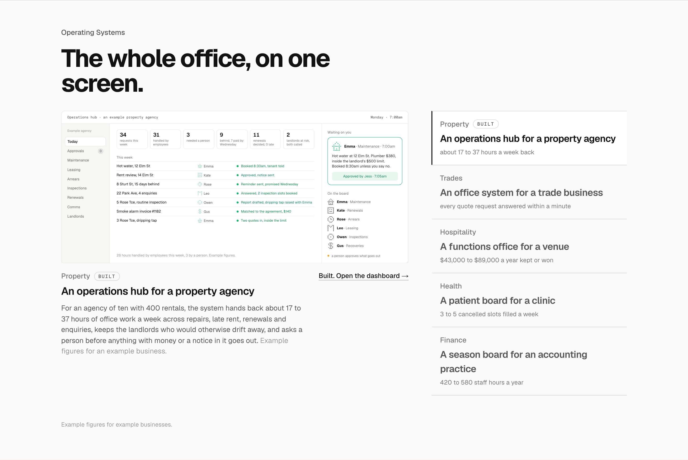
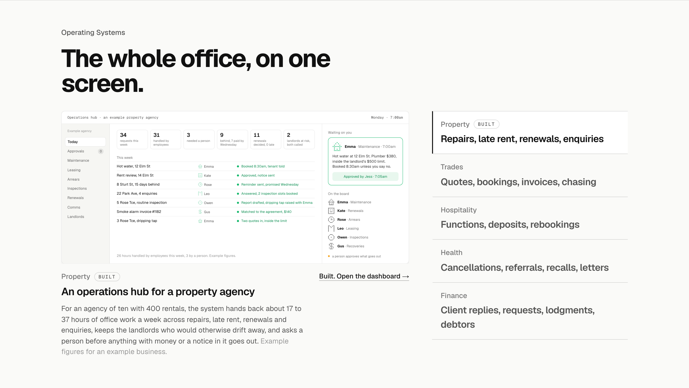
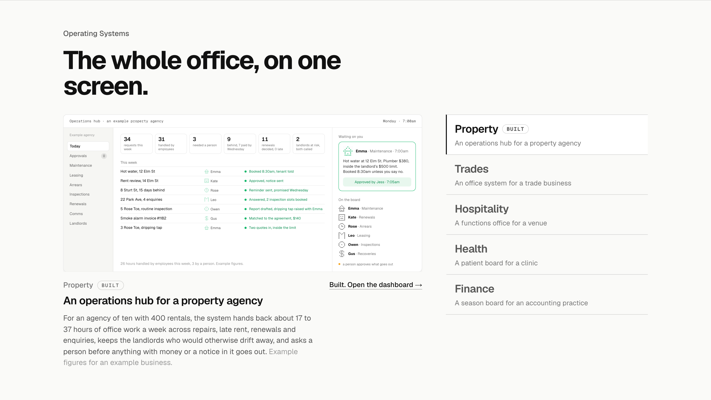

Operating Systems: the list three ways
Detail 2 of 5. The section with your heading in place and Property active; only the five rows on the right change. Figures in option 1 are the value model’s lines for example businesses.
TodayIndustry, then the system’s nameThe row as built: the industry small, the system’s name big, Property with its Built tag.

1. With the figureIndustry, the system’s name, the figure under itEach row ends with the model’s headline figure for an example business, small and muted, with one line at the foot saying they are example figures. The list carries the value before a screen is clicked. Recommended.

2. What runs by itselfIndustry, then the jobsThe system’s name gives way to the jobs it runs: repairs, late rent, renewals, enquiries. Reads as what happens, not what it is called; the name stays under the screen.

3. Industry firstThe industry big, the system’s name smallThe hierarchy flipped so a visitor finds their industry at a glance, the system’s name under it; tighter rows, so the list sits inside the screen’s height.
